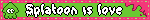
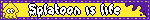
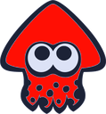
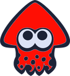

Splatoon is a video game series created by Nintendo in 2015. You play as an inkling (or an octoling) who, with your team, has to cover most of a stage with your ink color before time runs out. Whoever covers the stage with their color the most wins!
There are three mainline games and two DLCs: Octo Expansion and Side Order. There is also an upcoming spinoff game called "Splatoon Raiders".
Current games:


 

Stay fresh!